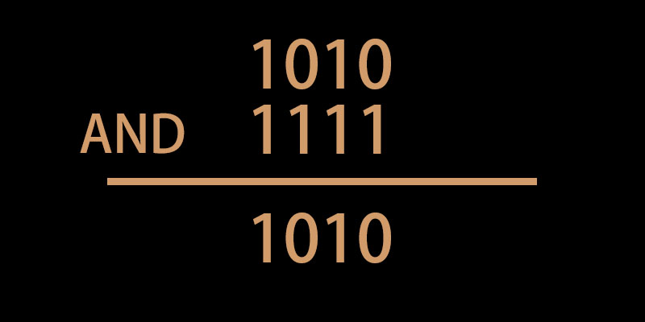
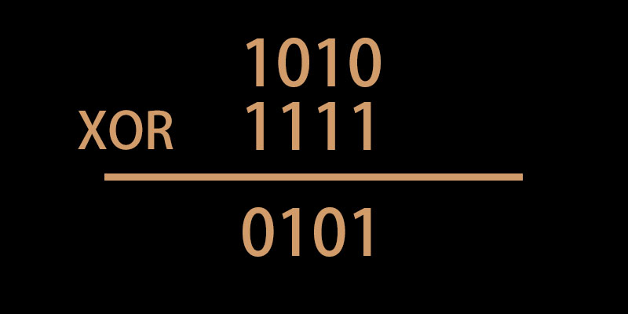
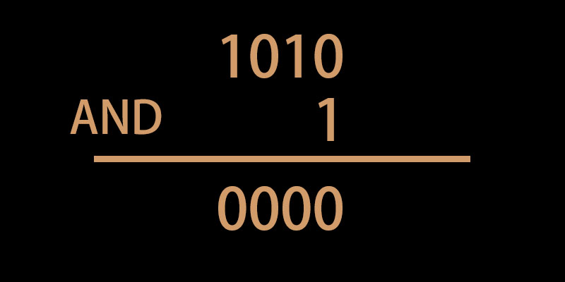

原來寫程式還可以這樣子操作。
位元的概念
首先，電腦是用「位元」來當作單位，也就是二進位的 0 跟 1，所以這裡提的位元，就是指「二進位」數字的意思。
位移運算子
位移運算子是對「位元」來做位移，在效能上會比你直接用加減乘除那些來的好（畢竟電腦的最底層就是一堆 0101），所以這是一個很值得學的東西。
如果忘記二進位怎麼轉換的話先幫你複習一下：
假設有一個數字是 100
用數學來寫的話會是：2^0 x 0 + 2^1 x 0 + 2^2 x 1 = 4
但因為如果是 0 的話就等於 2^n x 0，所以你看的時候可以直接忽略，直接思考「有值的那一個位數」是多少次方就好，這樣比較快：
0100 = 2^2 = 4
1000 = 2^3 = 8
10000 = 2^4 = 16
位移運算的意思是就是「先把這個數字轉換成二進位」，接著把每一位往「左或右」位移，後面補 0：
1 | 4 << 1 |
上面的過程可以想成是這樣：
1 | 4 => 0100 轉成二進位 |
因為在二進位裡，每進一位就代表 x2，所以 4 往左位移一位，就等於 4 x 2，得到 8。
如果 4 往左移兩位，就等於 4 x 2 x 2，得到 16，以此類推。
所以有一個很直覺又簡單的記法：
2 << 1 看成是 2 x 2^1 = 42 << 2 看成是 2 x 2^2 = 82 << 3 看成是 2 x 2^3 = 16
總而言之，位移幾次 2 就乘幾次，接著在乘上原本的數字，以此類推。
如果是往右移的話就反過來，變成「除法」的意思，每往右移一位，就除以 2 一次，但要注意的是右移運算會省略掉「浮點數」：
1 | 3/2 |
位元運算
位元運算子：
&（AND）|（OR）^（XOR）~（NOT）
位元運算指的就是用「二進位來做運算」，參考這個圖：

意思是對 10 跟 15 做 & 位元運算（AND），1 代表 true，0 代表 false。
所以最後的結果是 1010，也就是 10
用 JavaScript 寫的結果：
1 | 10 & 15 |
|（OR）也是一樣的道理：
1 | 10 | 15 |
比較特別的是 XOR 跟 NOT。
^（XOR）是只有在 01 跟 10 的時候是 true，其他皆 false：

所以用 JavaScript 寫的結果是：
1 | 10 ^ 15 |
~（NOT）是把每個位元都做反向處理。
不過要注意一下，以剛剛的例子 15(1111) 你可能以為做完會變成 0(0000)，但並不是這樣子：
1 | ~15 |
這是因為 NOT 是對「所有位元」都做反轉，所以不能只看 1111 這四個位元，因為可能還有其他位元（假設有 32 位元好了）也跟著被反轉，所以最後才會得到 -16。
用位元運算來判斷偶數奇數
先思考這張圖的意思：

意思是說我們只想知道最後一個數字是 0 還是 1。
這樣子做有什麼用途？仔細想想看，在二進位的世界裡，只有「最後一個位元」能決定一個數字是奇數還是偶數，其他位元只會有可能是 0 或 2 的倍數，換句話說就是「其他位元只會產出偶數」。
但是最後一個位元不一樣，他會有 0 或 1 這兩個可能。所以重點來了，當結果是 0 的時候，最後的結果一定會是 偶數，因為「偶數 + 偶數」永遠都只會是偶數；反過來，當結果是 1 的時候，最後的結果一定會是 奇數，因為「偶數 + 奇數」永遠都會是奇數。
所以我可以直接驗證：
1 | 10&1 |
用位元運算來當作遮罩
我還不太懂這能怎麼運用，但就先記下來，看以後會不會想到。
簡單來說，前面是用： A & 1 來判斷最後一位數是不是 1。
你也可以換個想法，假設我想看第四個位元是不是 1，就可以用 A & 8（8=1000）來做判斷。
0 就代表第四位不是 1，1 就代表第四位是 1。
當位元運算碰到奇怪的資料型態
我做題目時發生的經驗，想留個紀錄。
我在用「變數」來做位元運算時，因為不確定這個變數值都跟我預期中的一樣，所以引發了一些非預期的結果，例如：
1 | n = undefined |
不管 n 的值是哪個，最後的輸出都會是 1，所以在做位元運算時要特別注意「變數值」的是否正確問題，要不然直接帶「數字」來做會比較安全一點。
另外如果 n = true 的情況比較特別一點：
1 | n = true |
結果會是 4。
這是因為 true 代表 1，所以想成是這樣：
1 | n = true |
甚至要這樣玩也可以：
1 | 1 << true + true + true |
最後就會輸出 1 << 3 的結果。
位元運算的執行順序
就跟一般的加減乘除一樣，所以不用特別在用括號括起來：
1 | 1 >> 2 > 3 // true |